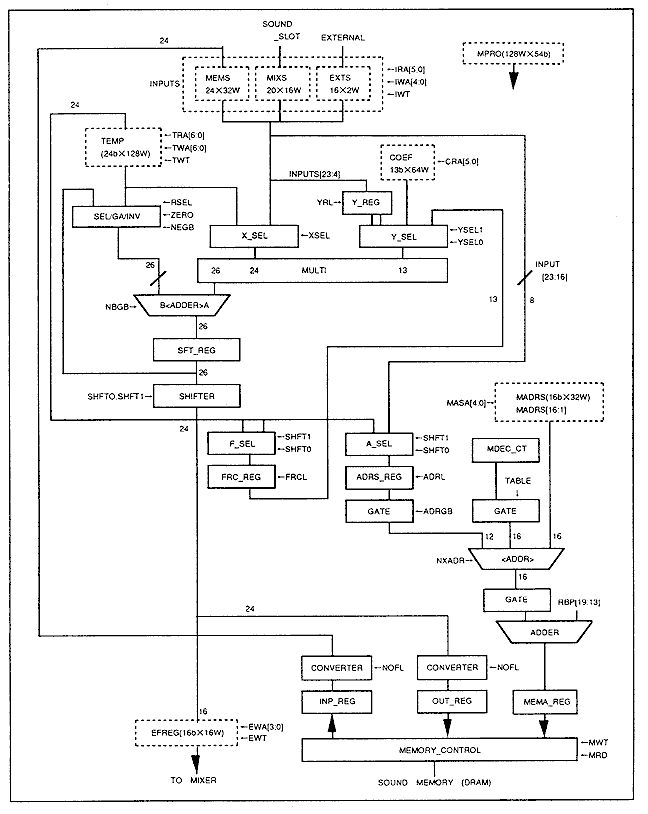

★HARDHARDWARE Manual
★SCSPユーザーズマニュアル
★HARDHARDWARE Manual
★SCSPユーザーズマニュアル
▲戻る
｜ ■
SCSPユーザーズマニュアル
第５章 SCSP内DSPの動作
■5.1 DSP構成
- 図5.1にDSP構成図を示します。
図5.1 DSP構成図

■5.2 DSP内RAM
- EXTS[15:0](Ｒ)；EXTernal Stack
- デジタルオーディオ入力のデータバッファを表します。
- MIXS[19:0](Ｒ／Ｗ)；MIX Stack
- 入力ミキサーからのサウンドデータバッファを表します。
- MEMS[23:0](Ｒ／Ｗ)；MEMory Stack
- サウンドメモリからの入力データバッファを表します。
- TEMP[23:0](Ｒ／Ｗ)；TEMPorary register
- DSPワークバッファ(128ワード)を表します。DSPワークバッファはリングバッファ構成で、１サンプル毎にポインタが１減少します。
- COEF[12:0](Ｒ／Ｗ)；COEFficient register
- DSP係数のバッファを表します。
- MADRS[16:1](Ｒ／Ｗ)；Memory ADdReSs register
- DSPアドレスのバッファを表します。
- MPRO[63:0](Ｒ／Ｗ)；Micro PROgram register
- DSPマイクプログラムのバッファを表します。
- EFREG[15:0](Ｒ／Ｗ)；EFfect REGister
- DSP出力バッファを表します。
▲戻る
｜ ■
★HARDHARDWARE Manual
★SCSPユーザーズマニュアル
Copyright SEGA ENTERPRISES, LTD., 1997